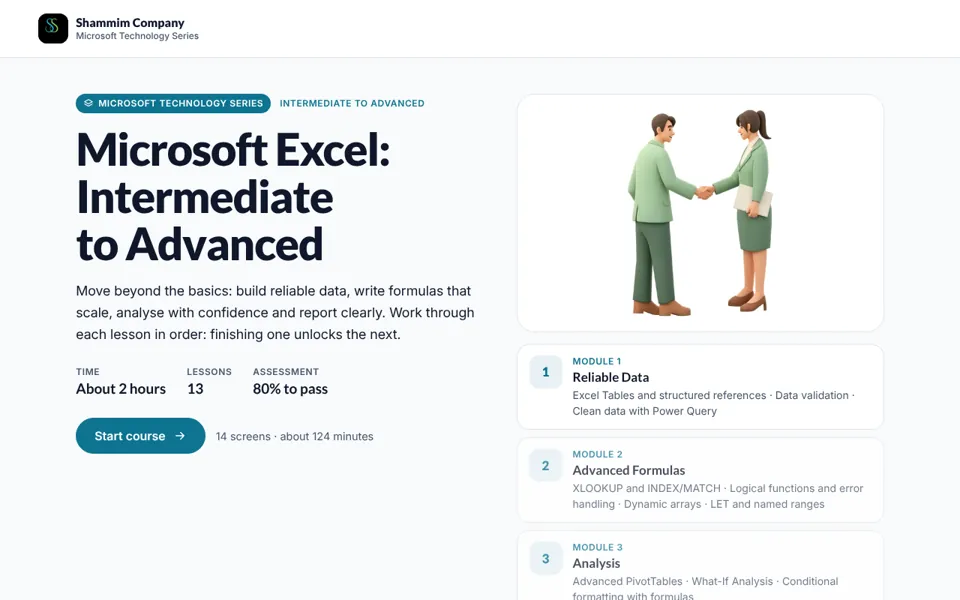

XL-00Course home

Course outline
- On screen
- Move beyond the basics: build reliable data, write formulas that scale, analyse with confidence and report clearly. About 2 hours, 13 lessons.
- Interaction
- Outline by module. Finishing one lesson unlocks the next. Start course button and progress bar.
- Audio
- None.